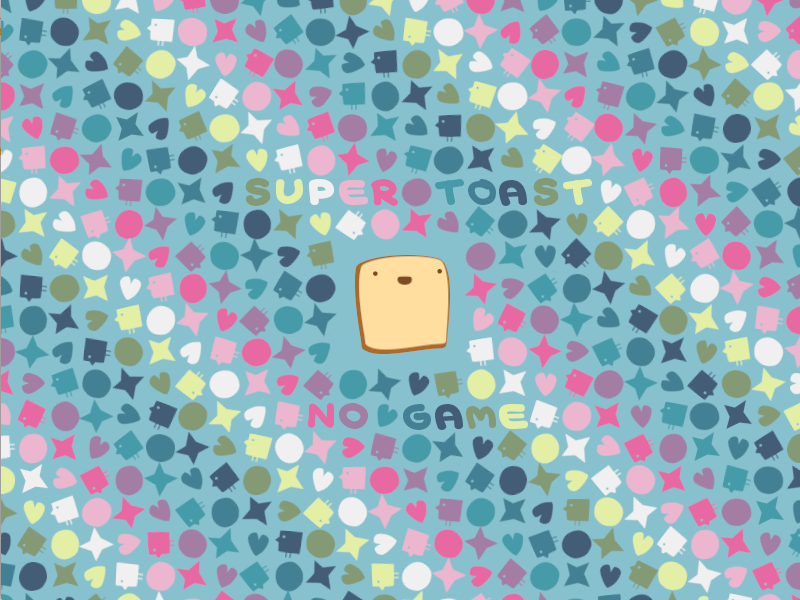

0.10.2
From LOVE


The codename for LÖVE 0.10.2 is Super Toast. It is currently released.
Changes from 0.10.1
Additions
- Added lovec.exe in Windows. It is the same as love.exe but built with the Console subsystem, so it always uses or provides a console.
- Added the ability to restart the game via love.event.quit("restart").
- Added support for passing a table to love.mouse.isDown, love.keyboard.isDown, love.keyboard.isScancodeDown, Joystick:isDown, and Joystick:isGamepadDown.
- Added love.window.isMaximized.
- Added 'ellipse' area distribution to ParticleSystems.
- Added support for BC4-7 compressed texture formats in KTX files.
- Added 'shaderswitches' field to the table returned by love.graphics.getStats.
- Added Quad:getTextureDimensions.
- Added PrismaticJoint:getAxis and WheelJoint:getAxis.
- Added 2-point version of love.physics.newRevoluteJoint.
- Added table variants of Fixture:setCategory and Fixture:setMask.
- Added EdgeShape:setNextVertex, EdgeShape:setPreviousVertex, EdgeShape:getNextVertex, and EdgeShape:getPreviousVertex.
- Added ChainShape:getNextVertex and ChainShape:getPreviousVertex.
- Added optional reference angle arguments to love.physics.newRevoluteJoint, love.physics.newPrismaticJoint, and love.physics.newWeldJoint.
- Added RevoluteJoint:getReferenceAngle, PrismaticJoint:getReferenceAngle, and WeldJoint:getReferenceAngle.
Deprecations
- Deprecated undocumented Shader:sendTexture, Shader:sendMatrix, Shader:sendInt, Shader:sendFloat, and Shader:sendBoolean methods.
Fixes
- Fixed love on iOS 6.
- Fixed os.execute always returning -1 on Linux.
- Fixed the love.lowmemory callback to call collectgarbage() after the callback has fired, instead of before.
- Fixed love.math.noise(nil) to error instead of returning nil.
- Fixed an occasional crash when a Thread ends.
- Fixed a hang at the end of video playback with some video files.
- Fixed the video decoding thread to not do any work when there are no videos to decode.
- Fixed love.graphics.newVideo(file) to no longer error if love.audio is disabled.
- Fixed a rare bug in Source:play for streaming Sources if the associated OpenAL source object was previously used for a static Source.
- Fixed corrupted Font glyphs in rare cases.
- Fixed stencils inside Canvases on some OpenGL ES 2 devices.
- Fixed an OpenGL error in OpenGL ES 3 when multiple render targets are used.
- Fixed love.window.setMode crashing when called with a Canvas active.
- Fixed love.window.maximize to update the reported window dimensions immediately.
- Fixed gamma correction of ImageFonts and BMFonts with colored images.
- Fixed the default shader improperly applying gamma correction to per-vertex colors when gamma correction is requested but not supported on OpenGL ES.
- Fixed text coloring breaking because of an empty string.
- Fixed large burst of particles when dramatically increasing the emission rate of a ParticleSystem.
- Fixed SpriteBatch:setBufferSize to keep old sprite data if it can fit.
- Fixed Joint:getBodies unconditionally erroring.
- Fixed memory leak in Text:set.
- Fixed incorrect kerning caused by using kerning information for the wrong character in some fonts.
- Fixed ImageData:setPixel, ImageData:getPixel, ImageData:mapPixel, SoundData:setSample, and SoundData:getSample to properly handle non-integer coordinates.
Other changes
- Improved performance of Channel methods by roughly 2x in many cases.
- Improved performance of Shader:send when small numbers of arguments are given.
- Updated love.filesystem.mount to accept a DroppedFile as the first parameter.
- Updated Shader:send to do type and argument checking based on the specified uniform variable's information instead of the arguments to the function.
- Updated Shader:send to accept a flat table for matrix uniforms.
Categories: